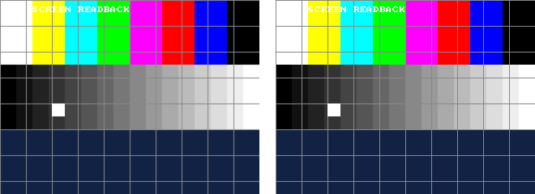

05 · Read the screen programmatically
The PC can ask the FPGA for the picture it is sending to the LCD and VGA, over the same USB cable that programs it. That makes graphics testable: this example moves a box from the PC and checks every pixel against the simulation.
Verified on the board 2026-10-24: 0 of 76,800 pixels differ
Quartus Prime Lite 17.1
LCD shield or VGA monitor (the test does not need either)
Skill: read-screen
The result

$ python examples/05_screen_readback/test_screen.py
0 of 76800 pixels differ
step 'H' -> box (64, 192): match
step 'RRDD' -> box (128, 256): match
step 'UUUUUULL' -> box (64, 64): match
OK: every capture matches the simulationLeft: read back from the board. Right: rendered by simulating the same Verilog. Three positions of the box, all 76,800 sampled pixels identical. (A capture takes about 6 s: 230 KB of text over JTAG.)
How it works
lib/rtl/debug_link.svsits next to any screen design and sees the same pixels the screens get. OnFit waits for the top-left pixel, stores every second pixel of every second line (320 × 240, 12-bit colour, 56 % of the block RAM), then sendsFRAME 320 240, 240 lines of hex,END.python scripts/de10.py screen out.pngsends theF, collects the text and writes the PNG.python scripts/screen_check.py capture.png expected.png --diff diff.pngcompares in 12-bit colour and marks differences in red.- The expected picture comes from simulation:
sim/tb_frame.svrenders the test card for a box position given with-D BX=.. -D BY=.., sampling the same even pixels as the board.
With 2-pixel sampling, every dot of the 2× and 4× text fonts in this BKM is captured. For a STEP 4 capture
(160 × 120, 14 % of the RAM) use debug_link #(.STEP(4)).
Things learned
- The capture first missed pixel (0, 0): it started one clock after seeing it. A self-checking unit test now compares all
76,800 pixels of a known pattern (
lib/sim/tb_debug_link.sv). - Pillow already scales a PPM with maximum value 15 to 0..255; multiplying again turned every grey white (the first run reported 65 % of pixels different, all on the PC side).
Run it
python scripts/de10.py program examples/05_screen_readback/screen_readback.sof
python examples/05_screen_readback/test_screen.py # moves the box, captures 3 times, compares
python scripts/de10.py send R 1; python scripts/de10.py screen logs/now.png # by handBuild it yourself
python scripts/new_project.py examples/05_screen_readback screen_top --lib display debug font
python scripts/de10.py build examples/05_screen_readbackTest without the board
python scripts/sim.py lib/sim/tb_debug_link.sv -D JTAG_UART_SIM → pixels 76800, errors 0 PASSFiles
| File | What |
|---|---|
src/screen_top.sv, src/test_card.sv | The design and its picture |
sim/tb_frame.sv, test_screen.py | Expected frames and the board test |
lib/rtl/debug_link.sv, jtag_uart.sv | Screen read-back and the USB link |
scripts/de10.py, frame_to_png.py, screen_check.py | Capture, decode, compare |